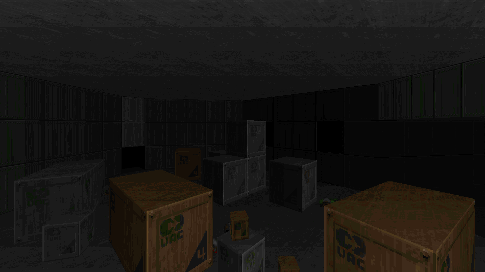

DOWNLOAD LINKS



| Year | 2021 |
| IWAD | doom2.wad |
| Source port | Boom-compatible |
| Game mode(s) | SP, coop (partial), DM (partial) |
| Map(s) contributed | MAP01 |
| Other contributions | DEHACKED, graphics, (Z)MAPINFO, project lead |
This project was mentioned in the 21 More for '21 feature in the 2021 Cacowards!
Literalism is a community project I hosted over the course of July and August of 2021. The core idea for the project was remotely inspired by speedmapping sessions
and how they often employ a thematic restriction. In Literalism, participating mappers were given a randomly generated map title to make maps inspired by. The final mapset includes
26 maps in total.
My own map entry in Literalism occupies the MAP01 slot. It's named "The Imp Engine", and it's a fairly small map resembling a techbase of some kind. As the map title implies, the
resistance comprises a respectable number of Imps, with Shotgunners, Pinkies and Revenants sprinkled in among them. The first half of the map provides pretty straightforward gameplay,
while the second half involves crushers that you must avoid in addition to the Imp fireballs.
In addition to hosting the project and making the first map of the set, I made the graphics, DEHACKED and (Z)MAPINFO lumps for the wad. Being the leader of the project, I was also in
charge of compiling the set.